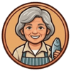
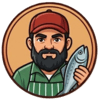

🐟 本季魚貨看板（共 0 箱）
魚名
目前價格
0元
3.0
本頁面專為直式螢幕設計，以提供最佳體驗。

你來到苗栗竹南龍鳳漁港，要跟另外 6 位買家一起競標剛進港的漁獲，用有限的現金標到魚貨，最終依照你的採購內容決定是不是一個懂得永續海鮮觀念的守護者。
比賽進行中看得到的：

魚販阿姨
魚販阿伯結算時才會看到（競標當下不會提示）：
依每箱魚種的永續等級加減分；買到保育類/瀕危魚種會被重扣分，甚至直接被判定 F 級「海洋破壞者」。總分達 550 以上才是 S 級「海洋保衛者」。